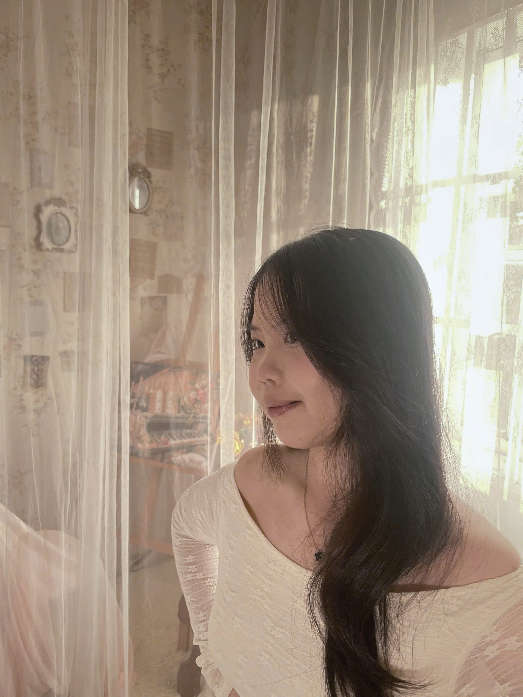

Họ và tên: Nguyễn Hồ Thanh Tú
Ngày sinh: 09/01/2008
Dân tộc: Kinh
Địa chỉ: ấp Tân Bình 2, xã Xuân Phú, tỉnh Đồng Nai
Họ tên cha:Nguyễn Văn Phong
Nghề nghiệp:Nông dân
Họ tên mẹ:Hồ Thị Thu Trâm
Nghề nghiệp:Nông dân
Môn học yêu thích:Sinh học
Điểm mạnh:
Điểm yếu:Yếu môn Ngữ Văn
Thành tích nổi bật:Giải Khuyến Khích HSG Tỉnh môn Hóa học
Định hướng:Nghành Thú y
